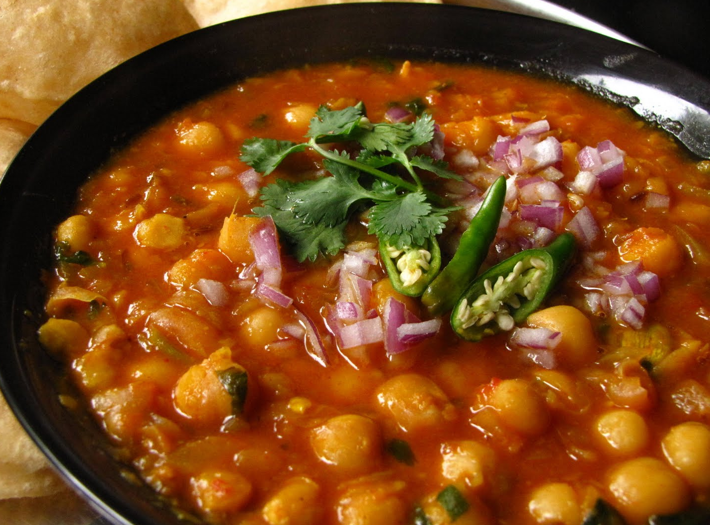

Chana Masala Recipe

Description
Chana Masala
Ingredients
- Produce & Aromatics:
- 1 small red onion, quartered, divided
- 10 sprigs fresh cilantro, stems and leaves separated
- 1 (1½-inch) piece ginger, peeled and chopped coarse
- 2 garlic cloves, chopped coarse
- 2 serrano chiles, stemmed, halved, seeded, and sliced thin crosswise, divided
- Pantry Items:
- 3 tablespoons vegetable oil
- 1 (14.5-ounce) can whole peeled tomatoes
- 2 (15-ounce) cans chickpeas, undrained
- Spices:
- 1 teaspoon Kashmiri chile powder
- 1 teaspoon ground cumin
- ½ teaspoon ground turmeric
- ½ teaspoon fennel seeds
- 1½ teaspoons garam masala
- ½ teaspoon table salt
- To Serve:
Instructions
-
Chop three-quarters of the onion coarsely; reserve the remaining.
Cut cilantro stems into 1-inch pieces. Process chopped onion, cilantro stems, ginger, garlic, and half the serranos in a food processor until finely chopped (about 20 seconds). Transfer mixture to a saucepan with oil and cook over medium-high heat, stirring often, for 5 to 7 minutes until softened and just starting to stick.
-
Meanwhile, process the tomatoes with juice in the same food processor until smooth (about 30 seconds).
Add chile powder, cumin, turmeric, and fennel seeds to the saucepan. Cook, stirring, for 1 minute until fragrant.
Add chickpeas with their liquid and the tomato mixture. Bring to a boil, then reduce heat and simmer, covered, for 15 minutes.
While that cooks, finely chop the reserved onion quarter.
-
Stir in garam masala and salt. Simmer uncovered for 8 to 12 more minutes until thickened and chickpeas are tender.
Taste and season with more salt if needed. Transfer to a serving bowl. Top with the reserved onion, remaining serranos, and cilantro leaves. Serve with lime wedges.
Home